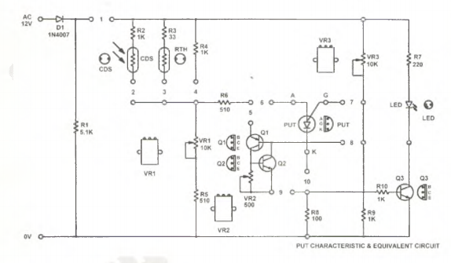

НЕОБХОДИМОЕ ОБОРУДОВАНИЕ
Блок питания KL-51001 — 1
Изолирующий трансформатор KL-58002
Модуль KL-53002 — 1
Двухлучевой осциллограф — 1
Аналоговый мультиметр — 1
ПРОЦЕДУРА
1. Подключите 12-вольтный блок питания переменного тока KL-51001 с KL-58002 к модулю
KL-53002.

А. Измерение характеристик УОТ